Leafresh
Leafresh brings nature to the desk. This works through the act of planting plants and we experience indirectly. The round shape has a motif in the pebbles and gives a white, clean impression.
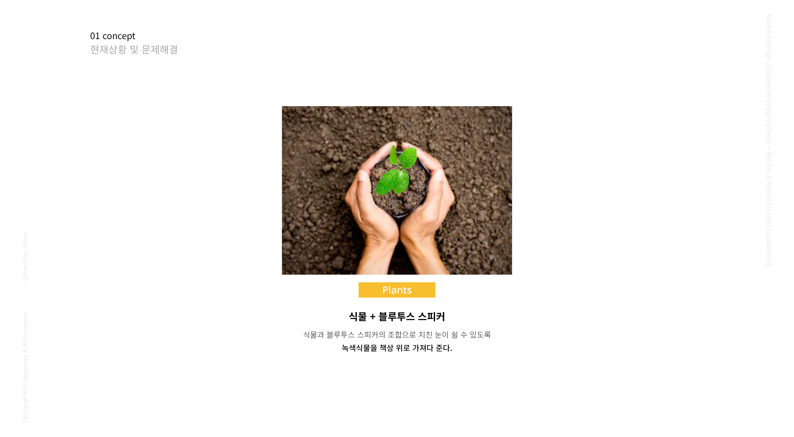
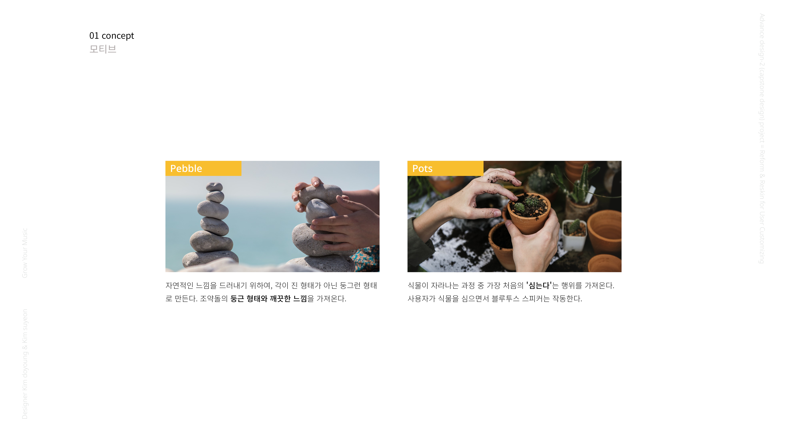
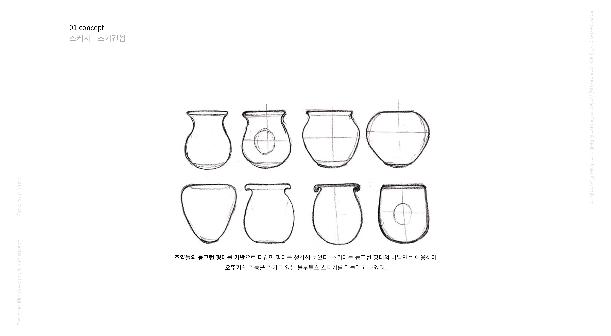
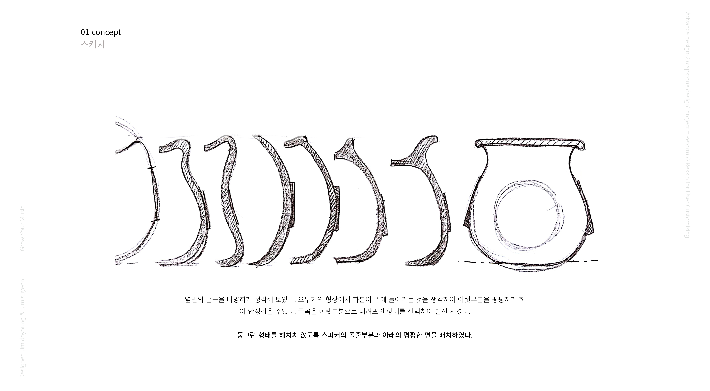
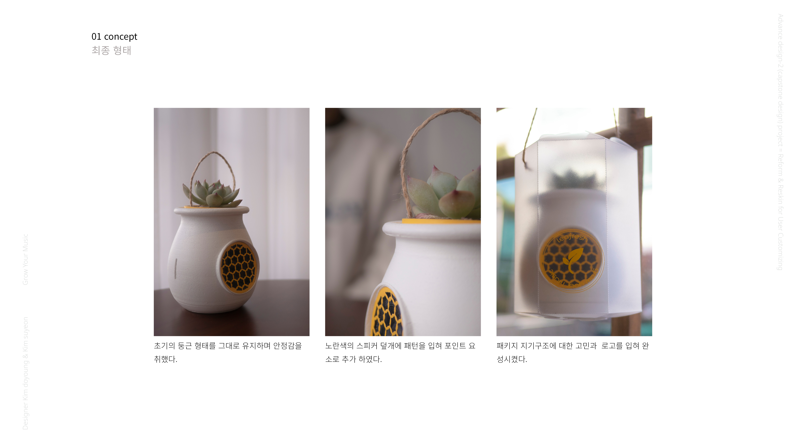
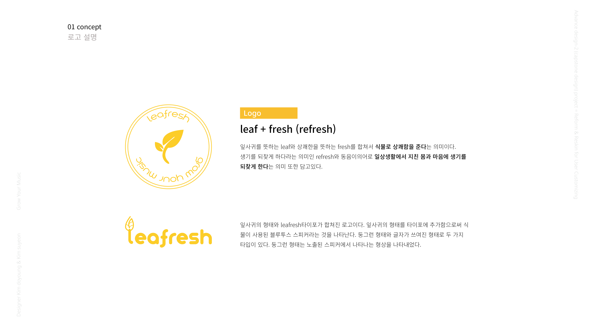
Product
Leafresh is placed on a round pebble form with a pot. While it has a round shape, it was contemplated about the shape that can be balanced.
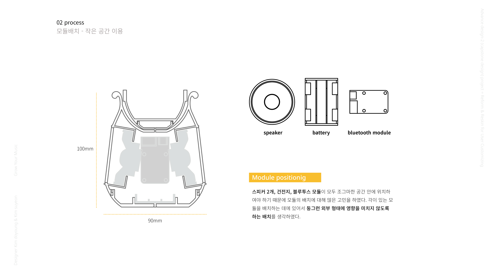
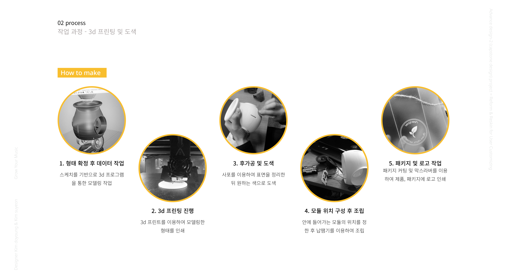

 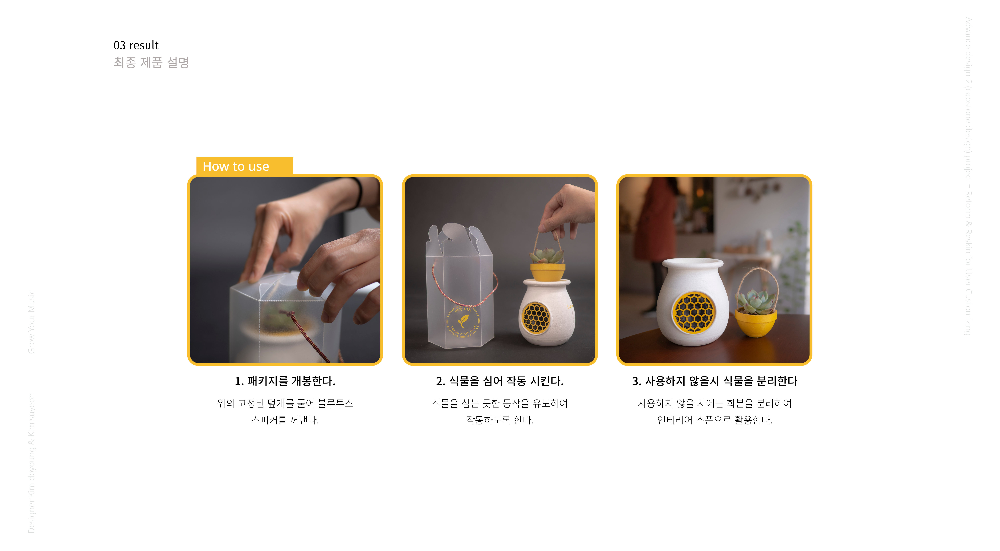
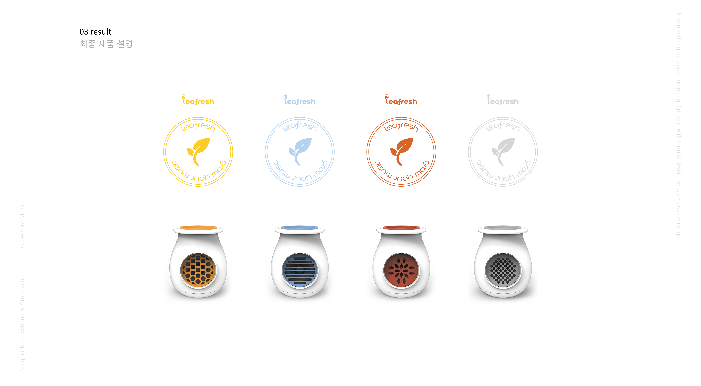
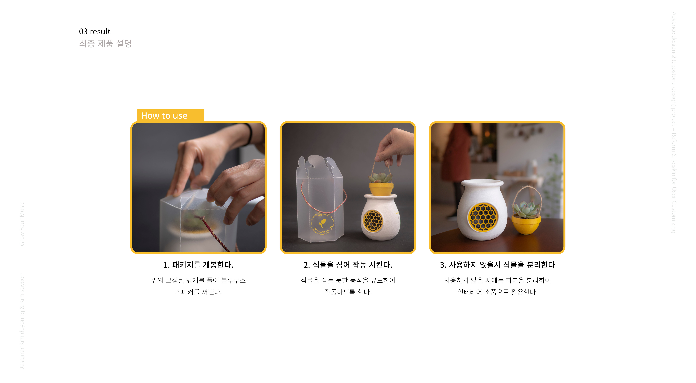
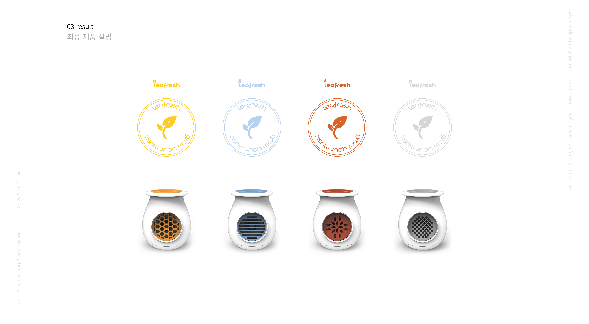
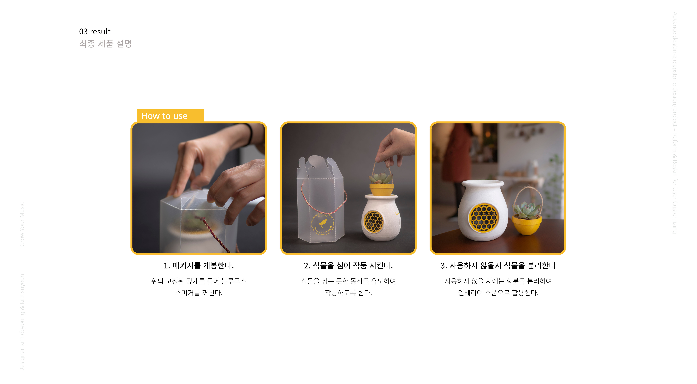
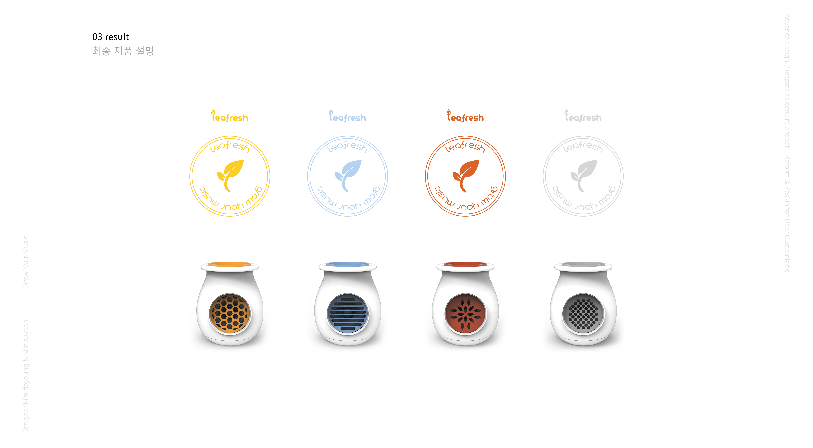